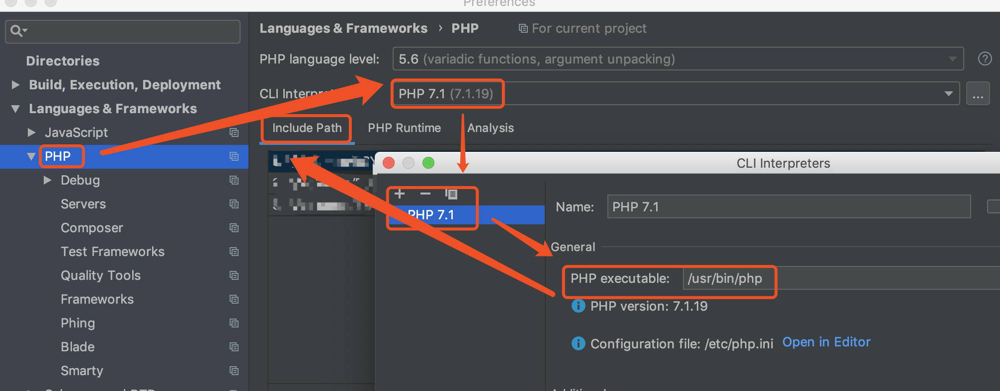
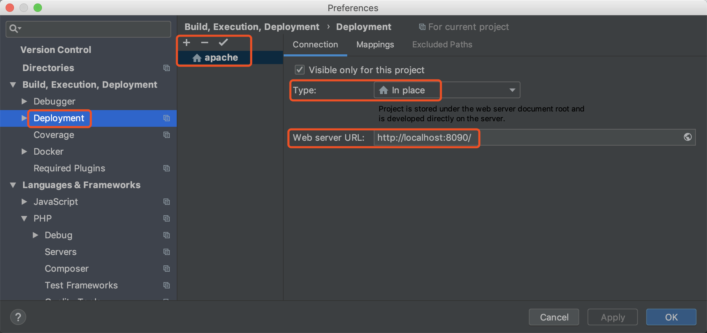
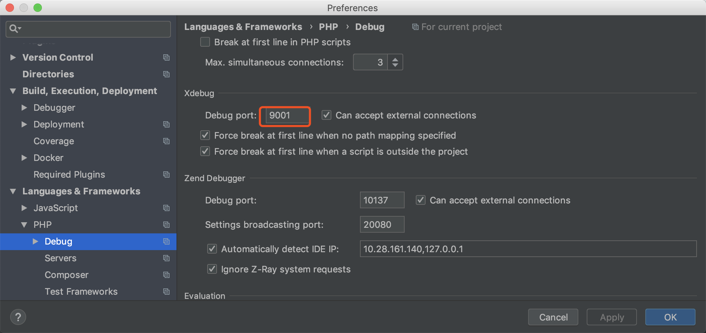
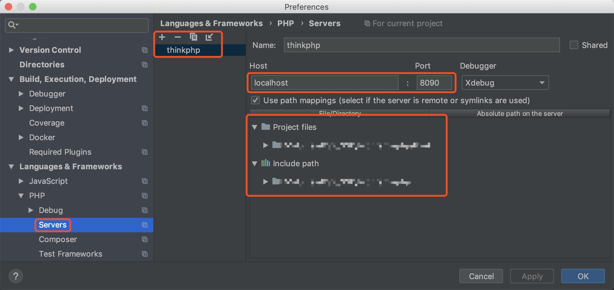
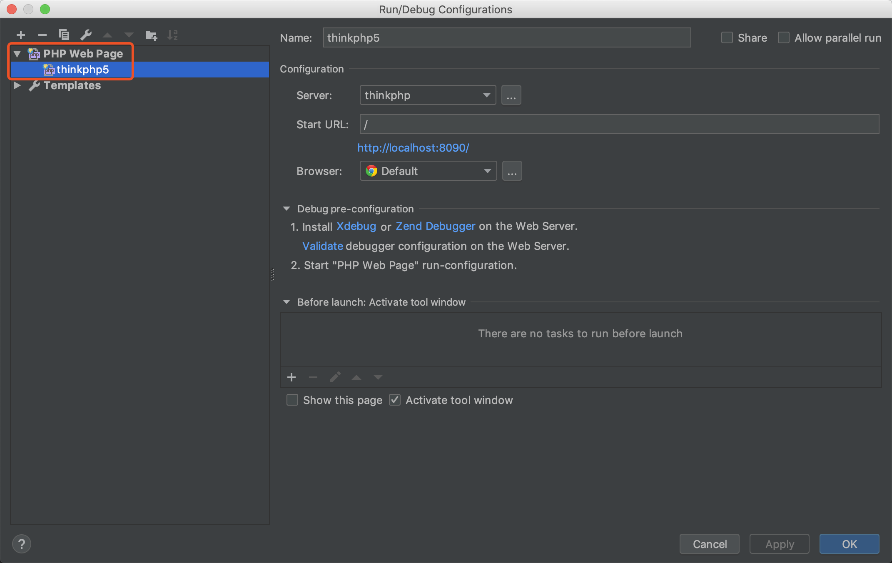
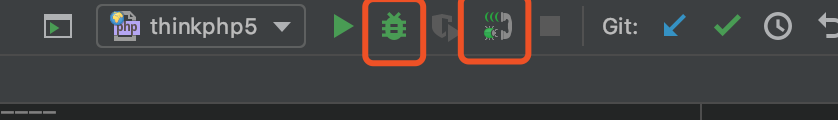

<!DOCTYPE html>


<html class="theme-next mist" lang="zh-Hans">
<head>
  <meta charset="UTF-8"/>
<meta http-equiv="X-UA-Compatible" content="IE=edge" />
<meta name="viewport" content="width=device-width, initial-scale=1, maximum-scale=1"/>
<meta name="theme-color" content="#222">


<meta http-equiv="Cache-Control" content="no-transform" />
<meta http-equiv="Cache-Control" content="no-siteapp" />


  
  
  <link href="/lib/fancybox/source/jquery.fancybox.css?v=2.1.5" rel="stylesheet" type="text/css" />


<link href="/lib/font-awesome/css/font-awesome.min.css?v=4.6.2" rel="stylesheet" type="text/css" />

<link href="/css/main.css?v=5.1.4" rel="stylesheet" type="text/css" />


  <link rel="apple-touch-icon" sizes="180x180" href="/images/apple-touch-icon-next.png?v=5.1.4">


  <link rel="icon" type="image/png" sizes="32x32" href="/images/favicon-32x32-next.png?v=5.1.4">


  <link rel="icon" type="image/png" sizes="16x16" href="/images/favicon-16x16-next.png?v=5.1.4">


  <link rel="mask-icon" href="/images/logo.svg?v=5.1.4" color="#222">


  <meta name="keywords" content="Hexo, NexT" />


<meta name="description" content="调试thinkphp5.0.23-5.1.31漏洞，使用phpstorm+xdebug环境">
<meta name="keywords" content="Web,Android,Photography">
<meta property="og:type" content="article">
<meta property="og:title" content="mac+phpstorm+xdebug调试thinkphp">
<meta property="og:url" content="http://yoursite.com/2019/01/04/study/mac+phpstorm+xdebug调试thinkphp5漏洞/index.html">
<meta property="og:site_name" content="White2Bai&#39;s Blog">
<meta property="og:description" content="调试thinkphp5.0.23-5.1.31漏洞，使用phpstorm+xdebug环境">
<meta property="og:locale" content="zh-Hans">
<meta property="og:image" content="http://yoursite.com/2019/01/04/study/mac+phpstorm+xdebug调试thinkphp5漏洞/cli_interpreter.png">
<meta property="og:image" content="http://yoursite.com/2019/01/04/study/mac+phpstorm+xdebug调试thinkphp5漏洞/deployment.png">
<meta property="og:image" content="http://yoursite.com/2019/01/04/study/mac+phpstorm+xdebug调试thinkphp5漏洞/xdebug.png">
<meta property="og:image" content="http://yoursite.com/2019/01/04/study/mac+phpstorm+xdebug调试thinkphp5漏洞/servers.png">
<meta property="og:image" content="http://yoursite.com/2019/01/04/study/mac+phpstorm+xdebug调试thinkphp5漏洞/configurations.png">
<meta property="og:image" content="http://yoursite.com/2019/01/04/study/mac+phpstorm+xdebug调试thinkphp5漏洞/debug.png">
<meta property="og:updated_time" content="2019-05-15T01:52:58.000Z">
<meta name="twitter:card" content="summary">
<meta name="twitter:title" content="mac+phpstorm+xdebug调试thinkphp">
<meta name="twitter:description" content="调试thinkphp5.0.23-5.1.31漏洞，使用phpstorm+xdebug环境">
<meta name="twitter:image" content="http://yoursite.com/2019/01/04/study/mac+phpstorm+xdebug调试thinkphp5漏洞/cli_interpreter.png">


<script type="text/javascript" id="hexo.configurations">
  var NexT = window.NexT || {};
  var CONFIG = {
    root: '/',
    scheme: 'Mist',
    version: '5.1.4',
    sidebar: {"position":"left","display":"post","offset":12,"b2t":false,"scrollpercent":true,"onmobile":false},
    fancybox: true,
    tabs: true,
    motion: {"enable":false,"async":false,"transition":{"post_block":"fadeIn","post_header":"slideDownIn","post_body":"slideDownIn","coll_header":"slideLeftIn","sidebar":"slideUpIn"}},
    duoshuo: {
      userId: '0',
      author: '博主'
    },
    algolia: {
      applicationID: '',
      apiKey: '',
      indexName: '',
      hits: {"per_page":10},
      labels: {"input_placeholder":"Search for Posts","hits_empty":"We didn't find any results for the search: ${query}","hits_stats":"${hits} results found in ${time} ms"}
    }
  };
</script>


  <link rel="canonical" href="http://yoursite.com/2019/01/04/study/mac+phpstorm+xdebug调试thinkphp5漏洞/"/>


  <title>mac+phpstorm+xdebug调试thinkphp | White2Bai's Blog</title>
  


</head>

<body itemscope itemtype="http://schema.org/WebPage" lang="zh-Hans">

  
  
    
  

  <div class="container sidebar-position-left page-post-detail">
    <div class="headband"></div>

    <header id="header" class="header" itemscope itemtype="http://schema.org/WPHeader">
      <div class="header-inner"><div class="site-brand-wrapper">
  <div class="site-meta ">
    

    <div class="custom-logo-site-title">
      <a href="/"  class="brand" rel="start">
        <span class="logo-line-before"><i></i></span>
        <span class="site-title">White2Bai's Blog</span>
        <span class="logo-line-after"><i></i></span>
      </a>
    </div>
      
        <p class="site-subtitle">世事秋凉，道阻且长。<br/>愿你我都能去危就安，得偿所望。</p>
      
  </div>

  <div class="site-nav-toggle">
    <button>
      <span class="btn-bar"></span>
      <span class="btn-bar"></span>
      <span class="btn-bar"></span>
    </button>
  </div>
</div>

<nav class="site-nav">
  

  
    <ul id="menu" class="menu">
      
        
        <li class="menu-item menu-item-home">
          <a href="/" rel="section">
            
              <i class="menu-item-icon fa fa-fw fa-home"></i> <br />
            
            首页
          </a>
        </li>
      
        
        <li class="menu-item menu-item-categories">
          <a href="/categories/" rel="section">
            
              <i class="menu-item-icon fa fa-fw fa-th"></i> <br />
            
            分类
          </a>
        </li>
      
        
        <li class="menu-item menu-item-archives">
          <a href="/archives/" rel="section">
            
              <i class="menu-item-icon fa fa-fw fa-archive"></i> <br />
            
            归档
          </a>
        </li>
      

      
        <li class="menu-item menu-item-search">
          
            <a href="javascript:;" class="popup-trigger">
          
            
              <i class="menu-item-icon fa fa-search fa-fw"></i> <br />
            
            搜索
          </a>
        </li>
      
    </ul>
  

  
    <div class="site-search">
      
  <div class="popup search-popup local-search-popup">
  <div class="local-search-header clearfix">
    <span class="search-icon">
      <i class="fa fa-search"></i>
    </span>
    <span class="popup-btn-close">
      <i class="fa fa-times-circle"></i>
    </span>
    <div class="local-search-input-wrapper">
      <input autocomplete="off"
             placeholder="搜索..." spellcheck="false"
             type="text" id="local-search-input">
    </div>
  </div>
  <div id="local-search-result"></div>
</div>


    </div>
  
</nav>


 </div>
    </header>

    <main id="main" class="main">
      <div class="main-inner">
        <div class="content-wrap">
          <div id="content" class="content">
            

  <div id="posts" class="posts-expand">
    

  

  
  
  

  <article class="post post-type-normal" itemscope itemtype="http://schema.org/Article">
  
  
  
  <div class="post-block">
    <link itemprop="mainEntityOfPage" href="http://yoursite.com/2019/01/04/study/mac+phpstorm+xdebug调试thinkphp5漏洞/">

    <span hidden itemprop="author" itemscope itemtype="http://schema.org/Person">
      <meta itemprop="name" content="White2Bai">
      <meta itemprop="description" content="">
      <meta itemprop="image" content="/images/avatar.gif">
    </span>

    <span hidden itemprop="publisher" itemscope itemtype="http://schema.org/Organization">
      <meta itemprop="name" content="White2Bai's Blog">
    </span>

    
      <header class="post-header">

        
        
          <h1 class="post-title" itemprop="name headline">mac+phpstorm+xdebug调试thinkphp</h1>
        

        <div class="post-meta">
          <span class="post-time">
            
              <span class="post-meta-item-icon">
                <i class="fa fa-calendar-o"></i>
              </span>
              
                <span class="post-meta-item-text">发表于</span>
              
              <time title="创建于" itemprop="dateCreated datePublished" datetime="2019-01-04T13:00:00+00:00">
                2019-01-04
              </time>
            

            

            
          </span>

          
            <span class="post-category" >
            
              <span class="post-meta-divider">|</span>
            
              <span class="post-meta-item-icon">
                <i class="fa fa-folder-o"></i>
              </span>
              
                <span class="post-meta-item-text">分类于</span>
              
              
                <span itemprop="about" itemscope itemtype="http://schema.org/Thing">
                  <a href="/categories/Study/" itemprop="url" rel="index">
                    <span itemprop="name">Study</span>
                  </a>
                </span>

                
                
                  ， 
                
              
                <span itemprop="about" itemscope itemtype="http://schema.org/Thing">
                  <a href="/categories/Study/PHP/" itemprop="url" rel="index">
                    <span itemprop="name">PHP</span>
                  </a>
                </span>

                
                
              
            </span>
          

          
            
          

          
          
             <span id="/2019/01/04/study/mac+phpstorm+xdebug调试thinkphp5漏洞/" class="leancloud_visitors" data-flag-title="mac+phpstorm+xdebug调试thinkphp">
               <span class="post-meta-divider">|</span>
               <span class="post-meta-item-icon">
                 <i class="fa fa-eye"></i>
               </span>
               
                 <span class="post-meta-item-text">阅读次数&#58;</span>
               
                 <span class="leancloud-visitors-count">次</span>
             </span>
          

          

          

          
              <div class="post-description">
                  调试thinkphp5.0.23-5.1.31漏洞，使用phpstorm+xdebug环境
              </div>
          

        </div>
      </header>
    

    
    
    
    <div class="post-body" itemprop="articleBody">

      
      

      
        <h1 id="0x00-准备"><a href="#0x00-准备" class="headerlink" title="0x00 准备"></a>0x00 准备</h1><p>用phpstorm可以很好的调试php，mac已搭建好php7.1、apache、mysql环境</p>
<h2 id="apache"><a href="#apache" class="headerlink" title="apache"></a>apache</h2><h3 id="httpd-conf"><a href="#httpd-conf" class="headerlink" title="httpd.conf"></a>httpd.conf</h3><p>apache配置文件httpd.conf(/etc/apache2/httpd.conf)，用来更改根目录、端口和php解析</p>
<p>mac自带的apache本身没有开启php解析环境，需要手动打开</p>
<figure class="highlight sh"><table><tr><td class="gutter"><pre><span class="line">1</span><br><span class="line">2</span><br><span class="line">3</span><br><span class="line">4</span><br><span class="line">5</span><br><span class="line">6</span><br><span class="line">7</span><br><span class="line">8</span><br><span class="line">9</span><br><span class="line">10</span><br><span class="line">11</span><br><span class="line">12</span><br><span class="line">13</span><br><span class="line">14</span><br></pre></td><td class="code"><pre><span class="line"><span class="comment">#根目录</span></span><br><span class="line"><span class="comment">#路径改成自定的</span></span><br><span class="line">DocumentRoot <span class="string">"/Library/WebServer/Documents"</span></span><br><span class="line">&lt;Directory <span class="string">"/Library/WebServer/Documents"</span>&gt;</span><br><span class="line"><span class="comment">#端口</span></span><br><span class="line"><span class="comment">#Listen 12.34.56.78:80</span></span><br><span class="line">&lt;IfDefine SERVER_APP_HAS_DEFAULT_PORTS&gt;</span><br><span class="line">    Listen 8080</span><br><span class="line">&lt;/IfDefine&gt;</span><br><span class="line">&lt;IfDefine !SERVER_APP_HAS_DEFAULT_PORTS&gt;</span><br><span class="line">    <span class="comment">#Listen 80</span></span><br><span class="line">    Listen 8080</span><br><span class="line"><span class="comment">#php</span></span><br><span class="line">LoadModule php7_module libexec/apache2/libphp7.so</span><br></pre></td></tr></table></figure>
<h3 id="apache启动"><a href="#apache启动" class="headerlink" title="apache启动"></a>apache启动</h3><p>apache的启动、重启、停止</p>
<figure class="highlight crmsh"><table><tr><td class="gutter"><pre><span class="line">1</span><br></pre></td><td class="code"><pre><span class="line">sudo apachectl <span class="literal">start</span>/restart/<span class="literal">stop</span></span><br></pre></td></tr></table></figure>
<h2 id="php"><a href="#php" class="headerlink" title="php"></a>php</h2><p>缺php.ini，找到php.ini.default，copy新建/etc/php.ini</p>
<h1 id="0x01-xdebug"><a href="#0x01-xdebug" class="headerlink" title="0x01 xdebug"></a>0x01 xdebug</h1><h2 id="安装pecl"><a href="#安装pecl" class="headerlink" title="安装pecl"></a>安装pecl</h2><p>php自带的调试器，现在brew无法直接安装，需要先装pecl<br><figure class="highlight shell"><table><tr><td class="gutter"><pre><span class="line">1</span><br><span class="line">2</span><br><span class="line">3</span><br><span class="line">4</span><br></pre></td><td class="code"><pre><span class="line"><span class="meta">$</span><span class="bash">curl -O http://pear.php.net/go-pear.phar</span></span><br><span class="line"><span class="meta">$</span><span class="bash">sudo php -d detect_unicode=0 go-pear.phar</span></span><br><span class="line"><span class="meta">#</span><span class="bash">检查是否安装好</span></span><br><span class="line"><span class="meta">$</span><span class="bash">pecl version</span></span><br></pre></td></tr></table></figure></p>
<h2 id="安装xdebug"><a href="#安装xdebug" class="headerlink" title="安装xdebug"></a>安装xdebug</h2><figure class="highlight gams"><table><tr><td class="gutter"><pre><span class="line">1</span><br></pre></td><td class="code"><pre><span class="line"><span class="meta"><span class="meta-keyword">$sudo</span> pecl install xdebug</span></span><br></pre></td></tr></table></figure>
<p>此时报错：<br>fatal error: ‘php.h’ file not found<br><figure class="highlight awk"><table><tr><td class="gutter"><pre><span class="line">1</span><br><span class="line">2</span><br></pre></td><td class="code"><pre><span class="line"><span class="variable">$xcode</span>-select --install</span><br><span class="line"><span class="variable">$sudo</span> installer -pkg <span class="regexp">/Library/</span>Developer<span class="regexp">/CommandLineTools/</span>Packages<span class="regexp">/macOS_SDK_headers_for_macOS_10.14.pkg -target /</span>\n</span><br></pre></td></tr></table></figure></p>
<p>之后重新安装xdebug即可<br>在phpinfo中有xdebug即安装和配置成功</p>
<h2 id="配置xdebug"><a href="#配置xdebug" class="headerlink" title="配置xdebug"></a>配置xdebug</h2><p>在php.ini添加<br><figure class="highlight"><table><tr><td class="gutter"><pre><span class="line">1</span><br><span class="line">2</span><br><span class="line">3</span><br><span class="line">4</span><br><span class="line">5</span><br><span class="line">6</span><br><span class="line">7</span><br><span class="line">8</span><br></pre></td><td class="code"><pre><span class="line"><span class="attr">zend_extension</span>=<span class="string">"/usr/local/php/modules/xdebug.so"</span></span><br><span class="line">xdebug.remote_enable =1</span><br><span class="line">xdebug.remote_handler = "dbgp"</span><br><span class="line">xdebug.remote_host = "localhost"</span><br><span class="line">xdebug.remote_mode = "req"</span><br><span class="line"><span class="comment">#调试端口，最好不是9000（nginx）</span></span><br><span class="line">xdebug.remote_port = 9001</span><br><span class="line">xdebug.idekey="PHPSTORM"</span><br></pre></td></tr></table></figure></p>
<h1 id="0x02-phpstorm"><a href="#0x02-phpstorm" class="headerlink" title="0x02 phpstorm"></a>0x02 phpstorm</h1><h2 id="网站要搭建在apache配置文件指定的目录下"><a href="#网站要搭建在apache配置文件指定的目录下" class="headerlink" title="网站要搭建在apache配置文件指定的目录下"></a>网站要搭建在apache配置文件指定的目录下</h2><p>要开启apache服务</p>
<h2 id="配置-PhpStorm"><a href="#配置-PhpStorm" class="headerlink" title="配置 PhpStorm"></a>配置 PhpStorm</h2><p>设置php路径<br><br></p>
<p>配置监听端口<br></p>
<p>打开 Preferences-&gt;Languages&amp;Frameworks-&gt;PHP-&gt;Debug，找到 Xdebug 选项，并在 Debug port:中填写9001<br></p>
<p>增加PHP Web Application,导航Run-&gt;Edit Configurations<br></p>
<p>在代码中设置断点并调试<br>点击debug和监听按钮<br></p>
<p>#0x03 thinkphp搭建</p>
<h2 id="源码下载"><a href="#源码下载" class="headerlink" title="源码下载"></a>源码下载</h2><p>复现使用thinkphp 5.0.20<br>找到对应版本再下载<br>这里似乎用不到composer</p>
<h3 id="think框架"><a href="#think框架" class="headerlink" title="think框架"></a>think框架</h3><p>入口文件是./public/index.php<br><figure class="highlight awk"><table><tr><td class="gutter"><pre><span class="line">1</span><br></pre></td><td class="code"><pre><span class="line">https:<span class="regexp">//gi</span>thub.com<span class="regexp">/top-think/</span>think<span class="regexp">/tree/</span>v5.<span class="number">0.20</span></span><br></pre></td></tr></table></figure></p>
<h3 id="framework"><a href="#framework" class="headerlink" title="framework"></a>framework</h3><p>核心库，在think 目录下下载并重命名为thinkphp[我当时忘记重命名一直找不到库文件，报错500]<br><figure class="highlight awk"><table><tr><td class="gutter"><pre><span class="line">1</span><br></pre></td><td class="code"><pre><span class="line">https:<span class="regexp">//gi</span>thub.com<span class="regexp">/top-think/</span>framework<span class="regexp">/tree/</span>v5.<span class="number">0.20</span></span><br></pre></td></tr></table></figure></p>
<h3 id="启动phpstorm"><a href="#启动phpstorm" class="headerlink" title="启动phpstorm"></a>启动phpstorm</h3><p>新建工程或者直接打开thinkphp目录，配置好php、server、xdebug、thinkphp的一些参数后访问index.php，可以正常访问网站，之后开始正式调试</p>

      
    </div>
    
    
    

    

    

    

    <footer class="post-footer">
      

      
      
      

      
        <div class="post-nav">
          <div class="post-nav-next post-nav-item">
            
              <a href="/2018/05/28/ctf-wp/TSCTF2018/" rel="next" title="TSCTF2018">
                <i class="fa fa-chevron-left"></i> TSCTF2018
              </a>
            
          </div>

          <span class="post-nav-divider"></span>

          <div class="post-nav-prev post-nav-item">
            
              <a href="/2019/05/13/ctf-wp/TSCTF2019/" rel="prev" title="TSCTF2019 线上">
                TSCTF2019 线上 <i class="fa fa-chevron-right"></i>
              </a>
            
          </div>
        </div>
      

      
      
    </footer>
  </div>
  
  
  
  </article>


    <div class="post-spread">
      
    </div>
  </div>


          </div>
          


          

  


        </div>
        
          
  
  <div class="sidebar-toggle">
    <div class="sidebar-toggle-line-wrap">
      <span class="sidebar-toggle-line sidebar-toggle-line-first"></span>
      <span class="sidebar-toggle-line sidebar-toggle-line-middle"></span>
      <span class="sidebar-toggle-line sidebar-toggle-line-last"></span>
    </div>
  </div>

  <aside id="sidebar" class="sidebar">
    
    <div class="sidebar-inner">

      

      
        <ul class="sidebar-nav motion-element">
          <li class="sidebar-nav-toc sidebar-nav-active" data-target="post-toc-wrap">
            文章目录
          </li>
          <li class="sidebar-nav-overview" data-target="site-overview-wrap">
            站点概览
          </li>
        </ul>
      

      <section class="site-overview-wrap sidebar-panel">
        <div class="site-overview">
          <div class="site-author motion-element" itemprop="author" itemscope itemtype="http://schema.org/Person">
            
              <p class="site-author-name" itemprop="name">White2Bai</p>
              <p class="site-description motion-element" itemprop="description">世事秋凉，道阻且长。<br/>愿你我都能去危就安，得偿所望。</p>
          </div>

          <nav class="site-state motion-element">

            
              <div class="site-state-item site-state-posts">
              
                <a href="/archives/">
              
                  <span class="site-state-item-count">3</span>
                  <span class="site-state-item-name">日志</span>
                </a>
              </div>
            

            
              
              
              <div class="site-state-item site-state-categories">
                <a href="/categories/index.html">
                  <span class="site-state-item-count">4</span>
                  <span class="site-state-item-name">分类</span>
                </a>
              </div>
            

            

          </nav>

          

          
            <div class="links-of-author motion-element">
                
                  <span class="links-of-author-item">
                    <a href="mailto:skyxxb676@163.com" target="_blank" title="E-Mail">
                      
                        <i class="fa fa-fw fa-envelope"></i>E-Mail</a>
                  </span>
                
            </div>
          

          
          

          
          

          

        </div>
      </section>

      
      <!--noindex-->
        <section class="post-toc-wrap motion-element sidebar-panel sidebar-panel-active">
          <div class="post-toc">

            
              
            

            
              <div class="post-toc-content"><ol class="nav"><li class="nav-item nav-level-1"><a class="nav-link" href="#0x00-准备"><span class="nav-number">1.</span> <span class="nav-text">0x00 准备</span></a><ol class="nav-child"><li class="nav-item nav-level-2"><a class="nav-link" href="#apache"><span class="nav-number">1.1.</span> <span class="nav-text">apache</span></a><ol class="nav-child"><li class="nav-item nav-level-3"><a class="nav-link" href="#httpd-conf"><span class="nav-number">1.1.1.</span> <span class="nav-text">httpd.conf</span></a></li><li class="nav-item nav-level-3"><a class="nav-link" href="#apache启动"><span class="nav-number">1.1.2.</span> <span class="nav-text">apache启动</span></a></li></ol></li><li class="nav-item nav-level-2"><a class="nav-link" href="#php"><span class="nav-number">1.2.</span> <span class="nav-text">php</span></a></li></ol></li><li class="nav-item nav-level-1"><a class="nav-link" href="#0x01-xdebug"><span class="nav-number">2.</span> <span class="nav-text">0x01 xdebug</span></a><ol class="nav-child"><li class="nav-item nav-level-2"><a class="nav-link" href="#安装pecl"><span class="nav-number">2.1.</span> <span class="nav-text">安装pecl</span></a></li><li class="nav-item nav-level-2"><a class="nav-link" href="#安装xdebug"><span class="nav-number">2.2.</span> <span class="nav-text">安装xdebug</span></a></li><li class="nav-item nav-level-2"><a class="nav-link" href="#配置xdebug"><span class="nav-number">2.3.</span> <span class="nav-text">配置xdebug</span></a></li></ol></li><li class="nav-item nav-level-1"><a class="nav-link" href="#0x02-phpstorm"><span class="nav-number">3.</span> <span class="nav-text">0x02 phpstorm</span></a><ol class="nav-child"><li class="nav-item nav-level-2"><a class="nav-link" href="#网站要搭建在apache配置文件指定的目录下"><span class="nav-number">3.1.</span> <span class="nav-text">网站要搭建在apache配置文件指定的目录下</span></a></li><li class="nav-item nav-level-2"><a class="nav-link" href="#配置-PhpStorm"><span class="nav-number">3.2.</span> <span class="nav-text">配置 PhpStorm</span></a></li><li class="nav-item nav-level-2"><a class="nav-link" href="#源码下载"><span class="nav-number">3.3.</span> <span class="nav-text">源码下载</span></a><ol class="nav-child"><li class="nav-item nav-level-3"><a class="nav-link" href="#think框架"><span class="nav-number">3.3.1.</span> <span class="nav-text">think框架</span></a></li><li class="nav-item nav-level-3"><a class="nav-link" href="#framework"><span class="nav-number">3.3.2.</span> <span class="nav-text">framework</span></a></li><li class="nav-item nav-level-3"><a class="nav-link" href="#启动phpstorm"><span class="nav-number">3.3.3.</span> <span class="nav-text">启动phpstorm</span></a></li></ol></li></ol></li></ol></div>
            

          </div>
        </section>
      <!--/noindex-->
      

      

    </div>
  </aside>


        
      </div>
    </main>

    <footer id="footer" class="footer">
      <div class="footer-inner">
        <div class="copyright">&copy; <span itemprop="copyrightYear">2019</span>
  <span class="with-love">
    <i class="fa fa-user"></i>
  </span>
  <span class="author" itemprop="copyrightHolder">White2Bai</span>

  
</div>


  <div class="powered-by">由 <a class="theme-link" target="_blank" href="https://hexo.io">Hexo</a> 强力驱动</div>


  <span class="post-meta-divider">|</span>


  <div class="theme-info">主题 &mdash; <a class="theme-link" target="_blank" href="https://github.com/iissnan/hexo-theme-next">NexT.Mist</a> v5.1.4</div>


        


        
      </div>
    </footer>

    
      <div class="back-to-top">
        <i class="fa fa-arrow-up"></i>
        
          <span id="scrollpercent"><span>0</span>%</span>
        
      </div>
    

    

  </div>

  

<script type="text/javascript">
  if (Object.prototype.toString.call(window.Promise) !== '[object Function]') {
    window.Promise = null;
  }
</script>


  


  
  
    <script type="text/javascript" src="/lib/jquery/index.js?v=2.1.3"></script>
  

  
  
    <script type="text/javascript" src="/lib/fastclick/lib/fastclick.min.js?v=1.0.6"></script>
  

  
  
    <script type="text/javascript" src="/lib/jquery_lazyload/jquery.lazyload.js?v=1.9.7"></script>
  

  
  
    <script type="text/javascript" src="/lib/velocity/velocity.min.js?v=1.2.1"></script>
  

  
  
    <script type="text/javascript" src="/lib/velocity/velocity.ui.min.js?v=1.2.1"></script>
  

  
  
    <script type="text/javascript" src="/lib/fancybox/source/jquery.fancybox.pack.js?v=2.1.5"></script>
  


  


  <script type="text/javascript" src="/js/src/utils.js?v=5.1.4"></script>

  <script type="text/javascript" src="/js/src/motion.js?v=5.1.4"></script>


  
  

  
  <script type="text/javascript" src="/js/src/scrollspy.js?v=5.1.4"></script>
<script type="text/javascript" src="/js/src/post-details.js?v=5.1.4"></script>


  


  <script type="text/javascript" src="/js/src/bootstrap.js?v=5.1.4"></script>


  


  


	


  


  


  

  <script type="text/javascript">
    // Popup Window;
    var isfetched = false;
    var isXml = true;
    // Search DB path;
    var search_path = "search.xml";
    if (search_path.length === 0) {
      search_path = "search.xml";
    } else if (/json$/i.test(search_path)) {
      isXml = false;
    }
    var path = "/" + search_path;
    // monitor main search box;

    var onPopupClose = function (e) {
      $('.popup').hide();
      $('#local-search-input').val('');
      $('.search-result-list').remove();
      $('#no-result').remove();
      $(".local-search-pop-overlay").remove();
      $('body').css('overflow', '');
    }

    function proceedsearch() {
      $("body")
        .append('<div class="search-popup-overlay local-search-pop-overlay"></div>')
        .css('overflow', 'hidden');
      $('.search-popup-overlay').click(onPopupClose);
      $('.popup').toggle();
      var $localSearchInput = $('#local-search-input');
      $localSearchInput.attr("autocapitalize", "none");
      $localSearchInput.attr("autocorrect", "off");
      $localSearchInput.focus();
    }

    // search function;
    var searchFunc = function(path, search_id, content_id) {
      'use strict';

      // start loading animation
      $("body")
        .append('<div class="search-popup-overlay local-search-pop-overlay">' +
          '<div id="search-loading-icon">' +
          '<i class="fa fa-spinner fa-pulse fa-5x fa-fw"></i>' +
          '</div>' +
          '</div>')
        .css('overflow', 'hidden');
      $("#search-loading-icon").css('margin', '20% auto 0 auto').css('text-align', 'center');

      $.ajax({
        url: path,
        dataType: isXml ? "xml" : "json",
        async: true,
        success: function(res) {
          // get the contents from search data
          isfetched = true;
          $('.popup').detach().appendTo('.header-inner');
          var datas = isXml ? $("entry", res).map(function() {
            return {
              title: $("title", this).text(),
              content: $("content",this).text(),
              url: $("url" , this).text()
            };
          }).get() : res;
          var input = document.getElementById(search_id);
          var resultContent = document.getElementById(content_id);
          var inputEventFunction = function() {
            var searchText = input.value.trim().toLowerCase();
            var keywords = searchText.split(/[\s\-]+/);
            if (keywords.length > 1) {
              keywords.push(searchText);
            }
            var resultItems = [];
            if (searchText.length > 0) {
              // perform local searching
              datas.forEach(function(data) {
                var isMatch = false;
                var hitCount = 0;
                var searchTextCount = 0;
                var title = data.title.trim();
                var titleInLowerCase = title.toLowerCase();
                var content = data.content.trim().replace(/<[^>]+>/g,"");
                var contentInLowerCase = content.toLowerCase();
                var articleUrl = decodeURIComponent(data.url);
                var indexOfTitle = [];
                var indexOfContent = [];
                // only match articles with not empty titles
                if(title != '') {
                  keywords.forEach(function(keyword) {
                    function getIndexByWord(word, text, caseSensitive) {
                      var wordLen = word.length;
                      if (wordLen === 0) {
                        return [];
                      }
                      var startPosition = 0, position = [], index = [];
                      if (!caseSensitive) {
                        text = text.toLowerCase();
                        word = word.toLowerCase();
                      }
                      while ((position = text.indexOf(word, startPosition)) > -1) {
                        index.push({position: position, word: word});
                        startPosition = position + wordLen;
                      }
                      return index;
                    }

                    indexOfTitle = indexOfTitle.concat(getIndexByWord(keyword, titleInLowerCase, false));
                    indexOfContent = indexOfContent.concat(getIndexByWord(keyword, contentInLowerCase, false));
                  });
                  if (indexOfTitle.length > 0 || indexOfContent.length > 0) {
                    isMatch = true;
                    hitCount = indexOfTitle.length + indexOfContent.length;
                  }
                }

                // show search results

                if (isMatch) {
                  // sort index by position of keyword

                  [indexOfTitle, indexOfContent].forEach(function (index) {
                    index.sort(function (itemLeft, itemRight) {
                      if (itemRight.position !== itemLeft.position) {
                        return itemRight.position - itemLeft.position;
                      } else {
                        return itemLeft.word.length - itemRight.word.length;
                      }
                    });
                  });

                  // merge hits into slices

                  function mergeIntoSlice(text, start, end, index) {
                    var item = index[index.length - 1];
                    var position = item.position;
                    var word = item.word;
                    var hits = [];
                    var searchTextCountInSlice = 0;
                    while (position + word.length <= end && index.length != 0) {
                      if (word === searchText) {
                        searchTextCountInSlice++;
                      }
                      hits.push({position: position, length: word.length});
                      var wordEnd = position + word.length;

                      // move to next position of hit

                      index.pop();
                      while (index.length != 0) {
                        item = index[index.length - 1];
                        position = item.position;
                        word = item.word;
                        if (wordEnd > position) {
                          index.pop();
                        } else {
                          break;
                        }
                      }
                    }
                    searchTextCount += searchTextCountInSlice;
                    return {
                      hits: hits,
                      start: start,
                      end: end,
                      searchTextCount: searchTextCountInSlice
                    };
                  }

                  var slicesOfTitle = [];
                  if (indexOfTitle.length != 0) {
                    slicesOfTitle.push(mergeIntoSlice(title, 0, title.length, indexOfTitle));
                  }

                  var slicesOfContent = [];
                  while (indexOfContent.length != 0) {
                    var item = indexOfContent[indexOfContent.length - 1];
                    var position = item.position;
                    var word = item.word;
                    // cut out 100 characters
                    var start = position - 20;
                    var end = position + 80;
                    if(start < 0){
                      start = 0;
                    }
                    if (end < position + word.length) {
                      end = position + word.length;
                    }
                    if(end > content.length){
                      end = content.length;
                    }
                    slicesOfContent.push(mergeIntoSlice(content, start, end, indexOfContent));
                  }

                  // sort slices in content by search text's count and hits' count

                  slicesOfContent.sort(function (sliceLeft, sliceRight) {
                    if (sliceLeft.searchTextCount !== sliceRight.searchTextCount) {
                      return sliceRight.searchTextCount - sliceLeft.searchTextCount;
                    } else if (sliceLeft.hits.length !== sliceRight.hits.length) {
                      return sliceRight.hits.length - sliceLeft.hits.length;
                    } else {
                      return sliceLeft.start - sliceRight.start;
                    }
                  });

                  // select top N slices in content

                  var upperBound = parseInt('1');
                  if (upperBound >= 0) {
                    slicesOfContent = slicesOfContent.slice(0, upperBound);
                  }

                  // highlight title and content

                  function highlightKeyword(text, slice) {
                    var result = '';
                    var prevEnd = slice.start;
                    slice.hits.forEach(function (hit) {
                      result += text.substring(prevEnd, hit.position);
                      var end = hit.position + hit.length;
                      result += '<b class="search-keyword">' + text.substring(hit.position, end) + '</b>';
                      prevEnd = end;
                    });
                    result += text.substring(prevEnd, slice.end);
                    return result;
                  }

                  var resultItem = '';

                  if (slicesOfTitle.length != 0) {
                    resultItem += "<li><a href='" + articleUrl + "' class='search-result-title'>" + highlightKeyword(title, slicesOfTitle[0]) + "</a>";
                  } else {
                    resultItem += "<li><a href='" + articleUrl + "' class='search-result-title'>" + title + "</a>";
                  }

                  slicesOfContent.forEach(function (slice) {
                    resultItem += "<a href='" + articleUrl + "'>" +
                      "<p class=\"search-result\">" + highlightKeyword(content, slice) +
                      "...</p>" + "</a>";
                  });

                  resultItem += "</li>";
                  resultItems.push({
                    item: resultItem,
                    searchTextCount: searchTextCount,
                    hitCount: hitCount,
                    id: resultItems.length
                  });
                }
              })
            };
            if (keywords.length === 1 && keywords[0] === "") {
              resultContent.innerHTML = '<div id="no-result"><i class="fa fa-search fa-5x" /></div>'
            } else if (resultItems.length === 0) {
              resultContent.innerHTML = '<div id="no-result"><i class="fa fa-frown-o fa-5x" /></div>'
            } else {
              resultItems.sort(function (resultLeft, resultRight) {
                if (resultLeft.searchTextCount !== resultRight.searchTextCount) {
                  return resultRight.searchTextCount - resultLeft.searchTextCount;
                } else if (resultLeft.hitCount !== resultRight.hitCount) {
                  return resultRight.hitCount - resultLeft.hitCount;
                } else {
                  return resultRight.id - resultLeft.id;
                }
              });
              var searchResultList = '<ul class=\"search-result-list\">';
              resultItems.forEach(function (result) {
                searchResultList += result.item;
              })
              searchResultList += "</ul>";
              resultContent.innerHTML = searchResultList;
            }
          }

          if ('auto' === 'auto') {
            input.addEventListener('input', inputEventFunction);
          } else {
            $('.search-icon').click(inputEventFunction);
            input.addEventListener('keypress', function (event) {
              if (event.keyCode === 13) {
                inputEventFunction();
              }
            });
          }

          // remove loading animation
          $(".local-search-pop-overlay").remove();
          $('body').css('overflow', '');

          proceedsearch();
        }
      });
    }

    // handle and trigger popup window;
    $('.popup-trigger').click(function(e) {
      e.stopPropagation();
      if (isfetched === false) {
        searchFunc(path, 'local-search-input', 'local-search-result');
      } else {
        proceedsearch();
      };
    });

    $('.popup-btn-close').click(onPopupClose);
    $('.popup').click(function(e){
      e.stopPropagation();
    });
    $(document).on('keyup', function (event) {
      var shouldDismissSearchPopup = event.which === 27 &&
        $('.search-popup').is(':visible');
      if (shouldDismissSearchPopup) {
        onPopupClose();
      }
    });
  </script>


  

  
  <script src="https://cdn1.lncld.net/static/js/av-core-mini-0.6.4.js"></script>
  <script>AV.initialize("lz4EcuQKwEBpgvTJ0c96EBeT-gzGzoHsz", "zNO9SnbXBuok32HxFQz37Fff");</script>
  <script>
    function showTime(Counter) {
      var query = new AV.Query(Counter);
      var entries = [];
      var $visitors = $(".leancloud_visitors");

      $visitors.each(function () {
        entries.push( $(this).attr("id").trim() );
      });

      query.containedIn('url', entries);
      query.find()
        .done(function (results) {
          var COUNT_CONTAINER_REF = '.leancloud-visitors-count';

          if (results.length === 0) {
            $visitors.find(COUNT_CONTAINER_REF).text(0);
            return;
          }

          for (var i = 0; i < results.length; i++) {
            var item = results[i];
            var url = item.get('url');
            var time = item.get('time');
            var element = document.getElementById(url);

            $(element).find(COUNT_CONTAINER_REF).text(time);
          }
          for(var i = 0; i < entries.length; i++) {
            var url = entries[i];
            var element = document.getElementById(url);
            var countSpan = $(element).find(COUNT_CONTAINER_REF);
            if( countSpan.text() == '') {
              countSpan.text(0);
            }
          }
        })
        .fail(function (object, error) {
          console.log("Error: " + error.code + " " + error.message);
        });
    }

    function addCount(Counter) {
      var $visitors = $(".leancloud_visitors");
      var url = $visitors.attr('id').trim();
      var title = $visitors.attr('data-flag-title').trim();
      var query = new AV.Query(Counter);

      query.equalTo("url", url);
      query.find({
        success: function(results) {
          if (results.length > 0) {
            var counter = results[0];
            counter.fetchWhenSave(true);
            counter.increment("time");
            counter.save(null, {
              success: function(counter) {
                var $element = $(document.getElementById(url));
                $element.find('.leancloud-visitors-count').text(counter.get('time'));
              },
              error: function(counter, error) {
                console.log('Failed to save Visitor num, with error message: ' + error.message);
              }
            });
          } else {
            var newcounter = new Counter();
            /* Set ACL */
            var acl = new AV.ACL();
            acl.setPublicReadAccess(true);
            acl.setPublicWriteAccess(true);
            newcounter.setACL(acl);
            /* End Set ACL */
            newcounter.set("title", title);
            newcounter.set("url", url);
            newcounter.set("time", 1);
            newcounter.save(null, {
              success: function(newcounter) {
                var $element = $(document.getElementById(url));
                $element.find('.leancloud-visitors-count').text(newcounter.get('time'));
              },
              error: function(newcounter, error) {
                console.log('Failed to create');
              }
            });
          }
        },
        error: function(error) {
          console.log('Error:' + error.code + " " + error.message);
        }
      });
    }

    $(function() {
      var Counter = AV.Object.extend("Counter");
      if ($('.leancloud_visitors').length == 1) {
        addCount(Counter);
      } else if ($('.post-title-link').length > 1) {
        showTime(Counter);
      }
    });
  </script>


  

  

  
  

  

  

  

</body>
</html>
